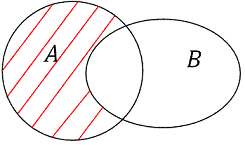
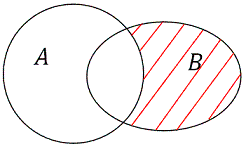
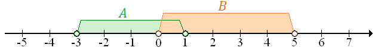
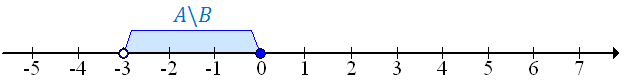
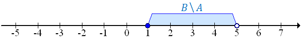

Różnicę zbiorów \(A\) i \(B\) oznaczamy: \[A \backslash B\] Graficzna ilustracja
różnicy zbiorów \(A \backslash B\):  Do różnicy \(A \backslash B\) zaliczamy wszystkie liczby, które
wchodzą w skład zbioru \(A\) i nie wchodzą w skład zbioru \(B\).
Różnicę zbiorów \(B\) i \(A\) oznaczamy: \[B \backslash A\] Graficzna ilustracja
różnicy zbiorów \(B \backslash A\):  Do różnicy \(B \backslash A\) zaliczamy wszystkie liczby, które
wchodzą w skład zbioru \(B\) i nie wchodzą w skład zbioru \(A\).
Jeżeli \(A = \{1, 2, 3, 4, 5\}\) oraz \(B = \{4, 5, 6, 7\}\), to: \[A \backslash B
= \{1, 2, 3\}\] oraz: \[B \backslash A = \{6, 7\}\]
Niech \(A = (-3, 1)\) oraz \(B = (0, 5)\).
Na początku zaznaczymy na osi
liczbowej zbiór \(A\) oraz zbiór \(B\):  Teraz zaznaczymy różnicę zbiorów \(A \backslash B\):  Czyli: \[A\backslash B = (-3,0\rangle \] Teraz
zaznaczymy na osi liczbowej różnicę \(B \backslash A\):  Czyli: \[B \backslash A = \langle 1,5)\]